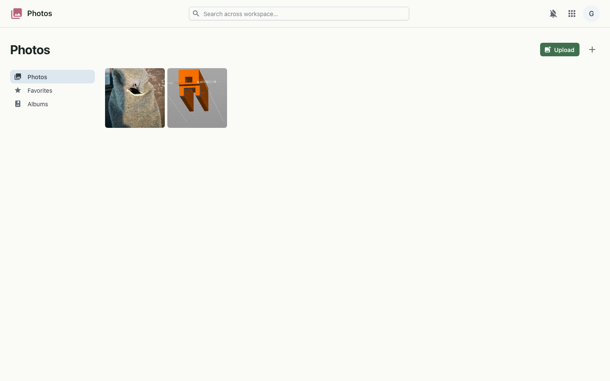
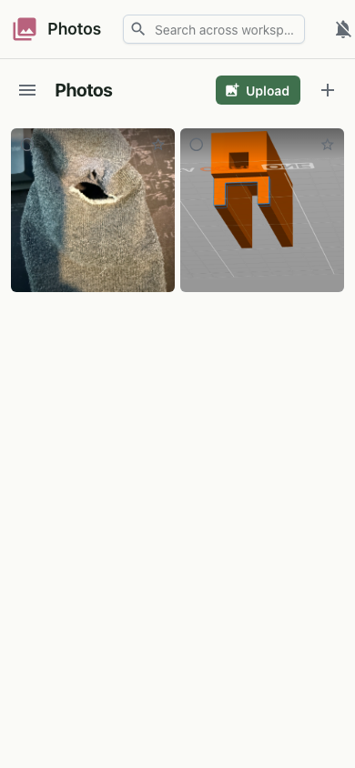

A photo library with albums, a full-screen viewer and a built-in editor — backed by your own object storage.
Photos is your workspace's gallery. Upload images, browse them in a grid, gather them into albums, and open any one full screen. A built-in editor handles quick crops and adjustments, and rich metadata shows the camera and capture details — all stored in object storage you run, with Immich integration.


Photos and albums are served from the workspace API, with image content stored in object storage and integrating with Immich. Uploads go up as multipart form data; favorites and description edits apply optimistically and sync to the server. The editor renders crops and adjustments in the browser and saves the output as a new photo. Everything is gated by your workspace single sign-on.